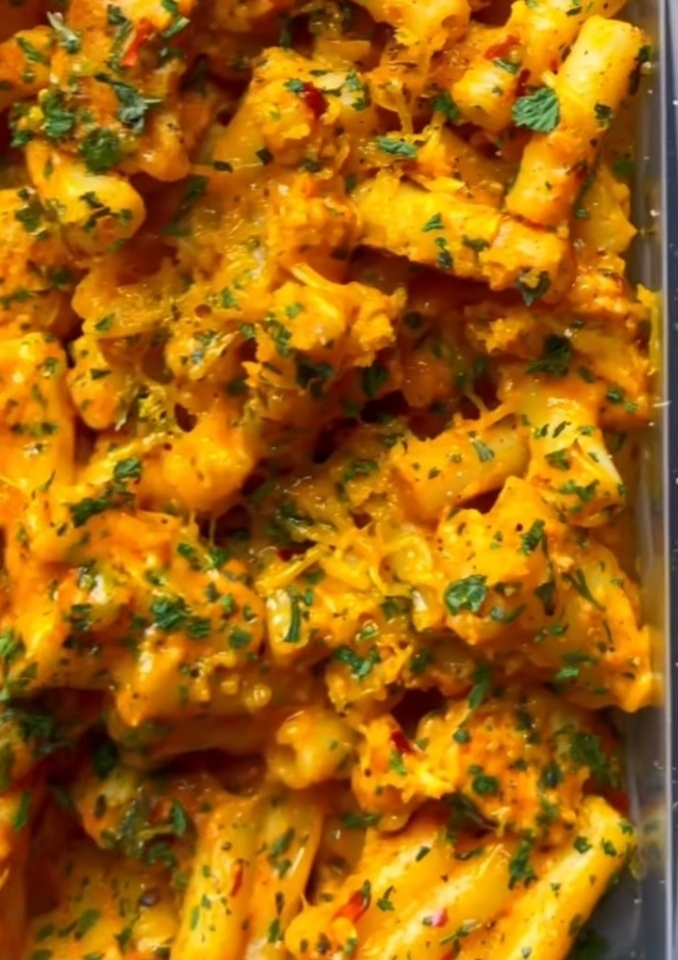

Buffalo Mac and Cheese

HIGH PROTEIN MEAL PREP BUFFALO MAC n CHEESE
(370 Cals, 37g Protein, 6g Fat, 38g Carbs per meal).
The ingredients used in this is to make one big meal prep to then portion equally into 5 servings for the week ‼️
- Fridge up to 3 days or freeze up to 3 months.
Ingredient's
- Chicken
- Chilli powder
- Black pepper
- Paprika
- Garlic powder
- Garlic paste
- Milk/milk of your choice
- Cream cheese
- Mozzarella cheese
- Cheddar cheese
- Macaroni pasta
- Buffalo sauce
Steps
- Dice 600g raw chicken breast into pieces.
- Season with a Tsp. Of chilli powder ,black pepper and a garlic powder.
- Mix well together and pan fry on medium heat for 10-15 minutes.
- At the same time boil 250g uncooked pasta macaroni for 10 mins.
- On Low heat to a pan add.
- A tablespoon of garlic paste.
- 300ml skimmed milk (or milk of choice).
- Paprika & 30g Low Fat Cream cheese.
- 30g Mozzarella & 20g cheddar cheese.
- Mix well together and then add your cooked pasta and a splash of buffalo sauce.
- Add your cooked chicken and then mix well.
- Garnish with parsley and optional black pepper.
- Add equal portions to your to your meal prep containers.
If you cannot follow the directions or you just want to see the video cooked I have supplied a link
to the Chefs Instagram page below.
Give him a follow if you use Instagram.
I hope you enjoyed this Recipe
Back to Recipes page